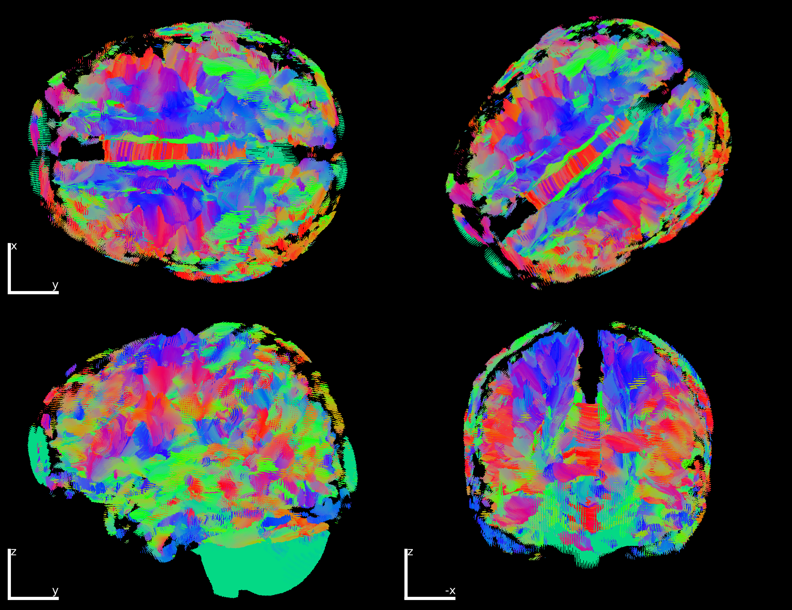
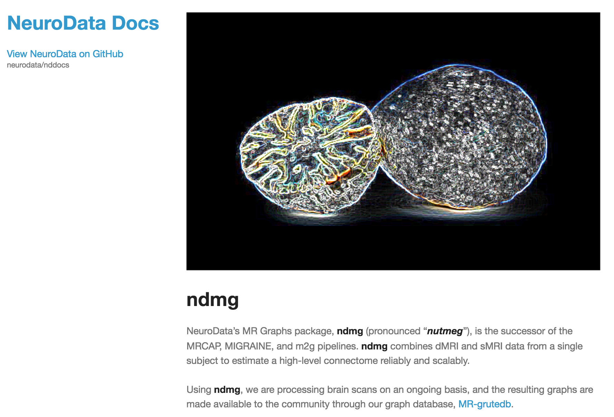

class: center, middle # [NeuroData](http://neurodata.io): ### Enabling Terascale Neuroscience for Everyone <!-- ### Joshua T. Vogelstein --> <!-- ### {[BME](http://bme.jhu.edu),[ICM](http://icm.jhu.edu),[CIS](http://cis.jhu.edu),[Kavli](http://kndi.jhu.edu)}@[jhu](http://jhu.edu) --> <!-- #### e: [jovo@jhu.edu](mailto:jovo@jhu.edu) | w: --> <!-- ### [NeuroData.io](http://neurodata.io) --> <br> <!-- [prof joshua t. vogelstein](http://jovo.me) --> <br> .center[ presented by, Joshua T. Vogelstein <br> {[bme](http://www.bme.jhu.edu/),[icm](http://icm.jhu.edu/),[cis](http://cis.jhu.edu/),[idies](http://idies.jhu.edu/),kavli,[cs](http://engineering.jhu.edu/computer-science/), [ams](http://engineering.jhu.edu/ams/), [neuro](http://neuroscience.jhu.edu/)}@[jhu](https://www.jhu.edu/) <br> please ask questions: [support@neurodata.io](mailto:support at neurodata dot io)! <br> these slides: <http://docs.neurodata.io/ndintro/cs.html> ] --- class: center ## [NeuroData](http://neurodata.io) 6 steps to discovery <img src="images/circle6.png" alt="Drawing" style="width: 600px;"/> <!-- <img src="https://github.com/neurodata/ndpaper/raw/master/figure0.png" alt="Drawing" style="width: 700px;"/> --> <br /> <!-- .left-pull[ - An cloud deployed ecosystem for big data neuroscience - Currently hosts 10+ public datasets, another 20+ private datasets - Total # of terabytes used: ~250 - Enables universal accessibility, reproducibility, and extensibility - Revealed novel spatial synapse patterns - Free and open source software (FOSS), and free and open access data (FOAD) ] --> --- layout: false class: middle, center <!-- .bbar[ [Intro](#intro) | _[Methods](#methods)_ | [Results](#applications) | [Discussion](#disc)] --> <!-- --> <img src="images/fig0.png" alt="Drawing" style="width: 800px;"/> --- layout: false class: middle, center .center[ # Store ] --- name:store ### Store <br> - Goal: eliminate read/write bottlenecks - Challenge: accessing a file takes time, data are big - Action: .y[ndbackend] infrastructure .center[ <img src="images/ndcomplete.png" style="height: 400px;"/> <!-- <img src="images/reshier.png" style="height: 250px;"/> <img src="https://upload.wikimedia.org/wikipedia/commons/3/3e/Moore3d-step3.png" style="height: 250px;"/> --> ] .cbar[ [@kunal](https://github.com/kunallillaney) ] <!-- [Code](https://github.com/neurodata/ndstore) | [Docs](http://docs.neurodata.io/ndstore/sphinx/console.html) | [API](http://docs.neurodata.io/ndstore/) | [Manuscript](http://arxiv.org/abs/1306.3543) | [Setup](https://github.com/neurodata/ndstore/tree/master/setup) | [<span class="images/issue.png"></span>](https://github.com/neurodata/ndstore/tree/master/setup) <a href="#"><span class="glyphicon glyphicon-file"></span></a> <a href="#"><span class="glyphicon glyphicon-book"></span></a> <a href="#"><span class="glyphicon glyphicon-exclamation-sign"></span></a> [<span class="glyphicon glyphicon-exclamation-sign"></span>](https://github.com/neurodata/ndstore/tree/master/setup) --> --- layout: false class: left ### Store: .y[Image Data Model] <br> - Goal: general enough for many data types - Challenge: simple enough to understand - Action: .y[nddatamodel] <br> .center[ <img src="images/datamodel_simple.png" style="height: 300px;"/> ] .cbar[ [@kunal](https://github.com/kunallillaney) ] --- ### Store: .y[Write Volumes] <br> - Goal: write faster than acquire - Challenge: data stored as images, streamed quickly - Action: .y[ndstore] spatial database <br> .center[ <!-- <img src="images/ndpaper-fig1a.png" style="height: 200px;"/> --> <img src="images/ndpaper-fig1b.png" style="height: 300px;"/> ] .cbar[ [@kunal](https://github.com/kunallillaney): [<i class="fa fa-code" aria-hidden="true"></i>](https://github.com/neurodata/ndstore) | [<i class="fa fa-book" aria-hidden="true"></i>](http://docs.neurodata.io/ndstore/sphinx/console.html) | [<i class="fa fa-exclamation-circle" aria-hidden="true"></i>](https://github.com/neurodata/ndstore/issues/new) ] --- ### Store: .y[Read Volumes] <br> - Goal: read volumes for machine vision - Challenge: data stored as images - Action: .y[ndstore] spatial database <br> .center[ <img src="images/ndpaper-fig1a.png" style="height: 300px;"/> <!-- <img src="images/ndpaper-fig1b.png" style="height: 200px;"/> --> ] .cbar[ [@kunal](https://github.com/kunallillaney): [<i class="fa fa-code" aria-hidden="true"></i>](https://github.com/neurodata/ndstore) | [<i class="fa fa-book" aria-hidden="true"></i>](http://docs.neurodata.io/ndstore/sphinx/console.html) | [<i class="fa fa-exclamation-circle" aria-hidden="true"></i>](https://github.com/neurodata/ndstore/issues/new) ] --- ### Store: .y[Read Tiles] <br> - Goal: visualize @ video rates for mobile - Challenge: data stored in cubes - Action: .y[ndtilecache] content distribution network <br> .center[ <img src="images/ndpaper-fig1c.png" style="height: 300px;"/> ] .cbar[ [@kunal](https://github.com/kunallillaney): [<i class="fa fa-code" aria-hidden="true"></i>](https://github.com/neurodata/ndtilecache) | [<i class="fa fa-book" aria-hidden="true"></i>](http://docs.neurodata.io/ndstore/api/tile_api.html) | [<i class="fa fa-exclamation-circle" aria-hidden="true"></i>](https://github.com/neurodata/ndtilecache/issues/new) ] --- name: ramondb layout: false ### Store: .y[Shape Data Model] <br> - Goal: general enough for many data types - Challenge: simple enough to understand - Action: .y[ndramon] .center[ <img src="images/ramon.png" style="height: 350px;"/> ] .cbar[ [@willgray](https://github.com/willgray): [<i class="fa fa-code" aria-hidden="true"></i>](https://github.com/neurodata/ndstore/tree/microns/ramon) | [<i class="fa fa-book" aria-hidden="true"></i>](http://docs.neurodata.io/nddocs/ndprocess/ramon.html) | [<i class="fa fa-exclamation-circle" aria-hidden="true"></i>](https://github.com/neurodata/ndio/issues/new) ] --- ### Store: .y[Read Shapes] <br> - Goal: enable easy semantic queries - Challenge: no standard "structured vocabulary" - Action: .y[ramondb] stores object metadata <br> .center[ <img src="images/fig5_mitochondria.png" style="height: 250px;"/> <img src="images/fig5_vesicles.png" style="height: 250px;"/> ] <br> .cbar[ [@willgray](https://github.com/willgray): [<i class="fa fa-code" aria-hidden="true"></i>](https://github.com/neurodata/ndstore/tree/microns/ramon) | [<i class="fa fa-book" aria-hidden="true"></i>](http://docs.neurodata.io/nddocs/ndprocess/ramon.html) | [<i class="fa fa-exclamation-circle" aria-hidden="true"></i>](https://github.com/neurodata/ndio/issues/new) ] --- ### Store: .y[Write Shapes] <br> - Goal: write annotations with object-level metadata fast - Challenge: many small files - Action: .y[ndblaze] assembles transparently in RAM .center[ <img src="images/ndpaper-fig1d.png" style="width: 600px;"/> ] .cbar[ [@kunal](https://github.com/kunallillaney): [<i class="fa fa-code" aria-hidden="true"></i>](https://github.com/neurodata/ndblaze) | [<i class="fa fa-exclamation-circle" aria-hidden="true"></i>](https://github.com/neurodata/ndblaze/issues/new) ] --- name: ramondb ### Store: .y[Annotations] <br> <br> <!--- [Code](https://github.com/neurodata/ndstore) | [Data Model](http://docs.neurodata.io/nddocs/ndparse/ramon.html) | [API](http://docs.neurodata.io/ndstore/api/ramon_api.html) | [Manuscript](http://journal.frontiersin.org/article/10.3389/fninf.2015.00020/full) --> .pull-left[ #### Data Model - ROI - Neuron - Segment - Skeleton - Synapse - Organelle - Node ] .pull-right[ <br> <img src="http://cs.brown.edu/people/tld/note/blog/13/07/26/figures/sejnowski_neural_activity_scales.jpg" style="width: 300px;"/> ] .cbar[ [@kunal](https://github.com/kunallillaney): [<i class="fa fa-code" aria-hidden="true"></i>](https://github.com/neurodata/ndstore) | [<i class="fa fa-exclamation-circle" aria-hidden="true"></i>](https://github.com/neurodata/ndstore/issues/new) ] --- name: grutedb ### Store: .y[Graphs] <br> <!-- [Web](http://openconnecto.me/graphs) | [Code](https://github.com/neurodata/m2g/tree/master/MR-OCP) | [Manuscript](http://arxiv.org/abs/1312.4318) --> .pull-left[ #### Data Model - Store graphs as graphml - Supports the following types - Directed, undirected - Hypergraphs - Hierarchical graphs - Richly attributed graphs - Supports the following functions - convert - download - downsample - compute invariants - build from raw DTI data ] .pull-right[ <br><br><br> <img src="https://upload.wikimedia.org/wikipedia/commons/9/9b/Social_Network_Analysis_Visualization.png" style="width: 350px;"/> ] .cbar[ [@disa](https://github.com/disa-mhembere): [<i class="fa fa-code" aria-hidden="true"></i>](https://github.com/neurodata/ndgrutedb) | [<i class="fa fa-exclamation-circle" aria-hidden="true"></i>](https://github.com/neurodata/ndgrutedb/issues/new) ] <!--- layout: true .bbar[ [Intro](#intro) | [Methods](#methods) | [Results](#applications) | [Discussion](#disc)] --> --- name: applications layout: false class: middle, center .center[ # Explore ] --- name: explore layout: false ### Explore: .y[Images] <br> - Goal: google maps like interface to explore images - Challenge: mobile speed - Action: .y[ndviz] navigation .center[ <img src="images/ndpaper-fig2a.png" style="width: 550px;"/> ] .cbar[ [@alexbaden](https://github.com/alexbaden): [<i class="fa fa-gamepad" aria-hidden="true"></i>](http://ix.neurodata.io) | [<i class="fa fa-code" aria-hidden="true"></i>](https://github.com/neurodata/NeuroDataViz) | [<i class="fa fa-exclamation-circle" aria-hidden="true"></i>](https://github.com/neurodata/NeuroDataViz/issues) ] --- ### Explore: .y[Histograms] <br> - Goal: explore histograms of very large volumes - Challenge: cannot compute histograms in memory - Action: .y[ndhist] .center[ <img src="images/explore-hist.png" style="width: 450px;"/> ] .cbar[ [@alexbaden](https://github.com/alexbaden): [<i class="fa fa-gamepad" aria-hidden="true"></i>](http://hx.neurodata.io) | [<i class="fa fa-code" aria-hidden="true"></i>](https://github.com/neurodata/histogram-explorer) | [<i class="fa fa-exclamation-circle" aria-hidden="true"></i>](https://github.com/neurodata/histogram-explorer/issues) ] --- ### Explore: .y[Shapes] <br> - Goal: dynamically overlay annotations - Challenge: interactivity - Action: .y[ndviz] add channel + query <br> .center[ <img src="images/ndpaper-fig2c.png" style="width: 700px;"/> ] .cbar[ [@alexbaden](https://github.com/alexbaden): [<i class="fa fa-gamepad" aria-hidden="true"></i>](http://ix.neurodata.io) | [<i class="fa fa-code" aria-hidden="true"></i>](https://github.com/neurodata/NeuroDataViz) | [<i class="fa fa-exclamation-circle" aria-hidden="true"></i>](https://github.com/neurodata/NeuroDataViz/issues) ] --- name: gx ### Explore: .y[Graphs] <!-- [Web App](http://gx.neurodata.io) | [Code](https://github.com/neurodata/Graph-Explorer) | [Issues](https://github.com/neurodata/Graph-Explorer/issues) --> <br> .pull-left[ #### Highlights - Shiny app - Can load any graphml file, including attributes - Calls [igraph](http://igraph.org/) in background #### Functions - Load or sample graph from variety of graph models - Compute & plot graph statistics - Plot graph layout & adjacency - Find communities - Save state ] .pull-right[ <iframe allowtransparency="true" style="background: #FFFFFF;" src="http://gx.neurodata.io" frameborder="0" height="500" width="100%"> </iframe> ] .cbar[ [@leoduan](https://github.com/laplacianduan): [<i class="fa fa-gamepad" aria-hidden="true"></i>](http://gx.neurodata.io) | [<i class="fa fa-code" aria-hidden="true"></i>](https://github.com/neurodata/ExploratoryGraph) | [<i class="fa fa-exclamation-circle" aria-hidden="true"></i>](https://github.com/neurodata/ExploratoryGraph/issues) ] --- layout: true .bbar[ [Intro](#intro) | [Methods](#methods) | [Results](#applications) | [Discussion](#disc)] --- name: applications layout: false class: middle, center .center[ # Analyze ] --- name: 2d layout: false ### Analyze: .y[2D Correction] <br> - Goal: auto remove 2D histogram artifacts - Challenge: signal & noise overlap, data are big - Action: .y[distributed multi-grid] (dmg) <br> .center[ <img src="images/A_full_section_2402.jpg" alt="Drawing" style="height: 200px;"/> <img src="images/D_dmg_full_section_2402.jpg" alt="Drawing" style="height: 200px;"/> ] <br> .cbar[ [@misha](https://github.com/mkazhdan/): [<i class="fa fa-code" aria-hidden="true"></i>](https://github.com/mkazhdan/DMG) | [<i class="fa fa-book" aria-hidden="true"></i>](http://www.cs.jhu.edu/~misha/MyPapers/ToG10.pdf) | [<i class="fa fa-exclamation-circle" aria-hidden="true"></i>](https://github.com/mkazhdan/DMG/issues/new) ] --- name: 3d ### Analyze: .y[3D Correction] <br> - Goal: auto remove 3D histogram artifacts - Challenge: data are bigger - Action: .y[gradient domain fusion] (gdf) <br> .center[ <img src="images/GDF2.png" alt="Drawing" style="width: 100%;"/> ] <br> .cbar[ [@misha](https://github.com/mkazhdan/): [<i class="fa fa-code" aria-hidden="true"></i>](http://www.cs.jhu.edu/~misha/Code/GradientDomainFusion/) | [<i class="fa fa-book" aria-hidden="true"></i>](http://arxiv.org/pdf/1506.02079v1.pdf) | [<i class="fa fa-exclamation-circle" aria-hidden="true"></i>](https://github.com/mkazhdan/DMG/issues/new) ] --- name: ndreg ### Analyze: .y[Volume Registration] <!-- [Code](https://github.com/neurodata/ndreg) | [Demo](https://github.com/neurodata/ndreg/blob/master/maskPipelineExample.ipynb) | [Setup](https://github.com/neurodata/ndreg/blob/master/README.md) | [Manuscript](https://github.com/neurodata/spiePhotonics/raw/master/spiePhotonics.pdf) --> #### Features - Python wrapper for SimpleITK - Open source [LDDMM](http://www.cis.jhu.edu/software/lddmm-volume/) nonlinear C implementation with Python bindings - Integrated with .y[ndio] - Rigid, affine, and nonlinear registration - Can apply to landmarks, masks, or images - Includes automatic masking - Quality control metrics .center[ <img src="images/ndreg2.png" alt="Drawing" style="height: 220px;"/> <img src="images/ndreg.png" alt="Drawing" style="height: 220px;"/> ] .cbar[ [@kwame](https://github.com/kkutten1/): [<i class="fa fa-code" aria-hidden="true"></i>](https://github.com/neurodata/ndreg) | [<i class="fa fa-exclamation-circle" aria-hidden="true"></i>](https://github.com/neurodata/ndreg/issues/new) ] --- name: shapes ### Analyze: .y[Shapes] <!-- [LDDMM](http://www.cis.jhu.edu/software/) | [LDDMM Python](https://github.com/neurodata/ndreg) | [SPH Code](https://github.com/mkazhdan/ShapeSPH) --> - Large Deformation Diffeomorphic Metric Mapping ([LDDMM](http://www.cis.jhu.edu/software/), [LDDMM Python](https://github.com/neurodata/ndreg)) - Learns pairwise invertable correspondence between volumes, surfaces, masks - Has been applied to MRI, histology, and CLARITY brains successfully - Shape Spherical Harmonics ([SPH Code](https://github.com/mkazhdan/ShapeSPH)) - [Shape Descriptions](http://htmlpreview.github.io/?https://github.com/mkazhdan/ShapeSPH/blob/master/descriptors.html) - [Shape Alignment](http://htmlpreview.github.io/?https://github.com/mkazhdan/ShapeSPH/blob/master/alignment.html) - [Shape Symmetry](http://htmlpreview.github.io/?https://github.com/mkazhdan/ShapeSPH/blob/master/symmetry.html) .center[ <img src="images/shape_descriptor.png" alt="Drawing" style="height: 220px;"/> ] .cbar[ [@kwame](https://github.com/kkutten1/): [<i class="fa fa-code" aria-hidden="true"></i>](https://github.com/neurodata/ndreg) | [<i class="fa fa-exclamation-circle" aria-hidden="true"></i>](https://github.com/neurodata/ndreg/issues/new) ] --- name:ndparse ### Analyze: .y[Object Detection] <br> - Goal: scalable object detection - Challenge: requires labeling, training, & distributed computing - Action: .y[ndparse] .center[ <img src="images/ndp_bock_truth_crop.png" alt="Drawing" style="width: 340px;"/> <img src="images/ndp_bock_detect_crop_circles.png" alt="Drawing" style="width: 340px;"/> ] <br> .cbar[ [@willgray](https://github.com/willgray): [<i class="fa fa-code" aria-hidden="true"></i>](https://github.com/neurodata/ndparse) | [<i class="fa fa-book" aria-hidden="true"></i>](http://docs.neurodata.io/nddocs/ndparse/mbcd.html) | [<i class="fa fa-exclamation-circle" aria-hidden="true"></i>](https://github.com/neurodata/ndparse/issues/new) ] --- name: mana ### Analyze: .y[Manual Labelling] <!-- [Docs](http://docs.neurodata.io/nddocs/ndparse/mana.html) | [Code](https://github.com/neurodata/ndod/tree/master/mana/code) --> .pull-left[ <!-- ## Wrangle: [ITK-SNAP](http://www.itksnap.org/pmwiki/pmwiki.php) --> - Identify ROI - run .y[mana_getImage] to get image using [ndio](#ndio) or [CAJAL](#cajal) - Annotate using [ITK-SNAP](http://www.itksnap.org/pmwiki/pmwiki.php) - Save annotations - run .y[mana_putAnno] to put annotation and metadata in neurodata database ] .pull-right[ <!-- ## ND: ITK-SNAP + [mana](docs.neurodata.io/mana) --> .center[ <img src="http://docs.neurodata.io/nddocs/ndparse/images/ndod/mana_itk_example.jpg" alt="Drawing" style="height: 250px;"/> <img src="http://docs.neurodata.io/nddocs/ndparse/images/ndod/mana_intro.png" alt="Drawing" style="height: 250px;"/> ]] .cbar[ [@willgray](https://github.com/willgray): [<i class="fa fa-code" aria-hidden="true"></i>](https://github.com/neurodata/ndparse) | [<i class="fa fa-exclamation-circle" aria-hidden="true"></i>](https://github.com/neurodata/ndparse/issues/new) ] --- name: maca ### Analyze: .y[Learning Labels] <!-- [Docs](http://docs.neurodata.io/nddocs/ndparse/maca.html) | [Code](https://github.com/neurodata/ndod/tree/master/maca) --> .pull-left[ <!-- ## Wrangle: [ilastik](http://ilastik.org/) --> - Computer vision tools for big data neuroscience - interfaces with ndio and CAJAL to get and put data - [ilastik](http://ilastik.org/) integration - tools for result visualization - precision-recall and ROC curves - Sweep over hyper-parameters - Cross-validate ] .pull-right[ <!-- ## ND: ilastic+CAJAL/ndio --> .center[ <img src="http://docs.neurodata.io/nddocs/ndparse/images/ndod/maca_example.png" alt="Drawing" style="width: 300px;"/> <img src="http://docs.neurodata.io/nddocs/ndparse/images/ndod/maca_ilastik_intro.png" alt="Drawing" style="width: 300px;"/> ]] .cbar[ [@willgray](https://github.com/willgray): [<i class="fa fa-code" aria-hidden="true"></i>](https://github.com/neurodata/ndparse) | [<i class="fa fa-exclamation-circle" aria-hidden="true"></i>](https://github.com/neurodata/ndparse/issues/new) ] --- name: maxa ### Analyze: .y[Large Scale Labelling] <!-- [Code](https://github.com/neurodata/ndod/tree/master/docs/maxa) --> <br /> - Can make usse of [LONI Pipeline](http://pipeline.bmap.ucla.edu/) - .y[Vesicle] Detect all synapses in electron microscopy data: [Code](https://github.com/neurodata/vesicle) | [Random Forest](http://docs.neurodata.io/vesicle/tutorials/vesiclerf.html) | [Deep Network](http://docs.neurodata.io/vesicle/tutorials/vesiclecnn.html) | [Manuscript](http://www.bmva.org/bmvc/2015/papers/paper081/paper081.pdf) - .y[mbcd] Detect all cell's in histology data using RF: [Code](https://github.com/neurodata/ndod/tree/master/maca/packages/mbcd) | [Tutorial](http://docs.neurodata.io/nddocs/ndparse/mbcd.html) - .y[nddl] Detect all cells in histology data using Deep Learning: [Tutorial](http://docs.neurodata.io/nddocs/ndparse/nddl.html) - Integrations planned for qsub, slurm and aws submission .center[ <img src="http://www.frontiersin.org/files/Articles/609/fninf-03-022/image_m/fninf-03-022-g002.jpg" alt="Drawing" style="width: 300px;"/> <img src="http://docs.neurodata.io/nddocs/ndparse/images/ndod/Y_manual1.png?raw=true" alt="Drawing" style="width: 300px;"/> ] .cbar[ [@willgray](https://github.com/willgray): [<i class="fa fa-code" aria-hidden="true"></i>](https://github.com/neurodata/ndparse) | [<i class="fa fa-exclamation-circle" aria-hidden="true"></i>](https://github.com/neurodata/ndparse/issues/new) ] --- name: i2g ### Analyze: .y[EM Graph Inference] <!-- [Web](http://docs.neurodata.io/i2g/) | [Manuscript](http://arxiv.org/abs/1411.6880) | [MATLAB Code](https://github.com/neurodata/i2g) | [Python Code](https://github.com/neurodata/kasthuri2015/blob/master/claims/claim9_make_graph.ipynb) | [Graph](http://openconnecto.me/mrdata/static/graphs/mouse/kasthuri_graph_v4.graphml) --> <br><br> .pull-left[ <br> - Provides automated end-to-end pipeline to reconstruct graphs from EM data - Leverages open source tools like .y[Gala] and .y[vesicle] - System-level graph quality assessment ] .pull-right[ <br><br> <img src="images/i2g.jpg" alt="Drawing" style="width: 300px;"/> ] .cbar[ [@willgray](https://github.com/willgray): [<i class="fa fa-code" aria-hidden="true"></i>](https://github.com/neurodata/i2g) | [<i class="fa fa-exclamation-circle" aria-hidden="true"></i>](https://github.com/neurodata/i2g/issues/new) ] --- name: d2g ### Analyze: .y[DTI Graph Inference] <!-- [Web](http://docs.neurodata.io/nddocs/mrgraphs/) | [Code](https://github.com/neurodata/ndmg/) | Manuscripts: [mrcap](http://ieeexplore.ieee.org/xpl/articleDetails.jsp?reload=true&arnumber=6173097), [MIGRAINE](http://arxiv.org/abs/1312.4875) | [Graphs](http://docs.neurodata.io/nddocs/mrgraphs/processed_data.html) --> <br> - one-click python package to generate graphs from structural MRI data - web-service to process individual brains - Over .y[100,000] graphs generated and available to date from 5000 scans - computes graphs with various attributes across many scales - available on pip > .y[pip install ndmg] .center[   ] .cbar[ [@gregkiar](https://github.com/gkiar): [<i class="fa fa-code" aria-hidden="true"></i>](https://github.com/neurodata/ndmg) | [<i class="fa fa-exclamation-circle" aria-hidden="true"></i>](https://github.com/neurodata/ndmg/issues/new) ] --- name: applications layout: false class: middle, center .center[ # Model ] --- name: graphs ### Model: .y[Graphs] <!-- [Webpage](http://flashx.io) | [Code](https://github.com/icoming/FlashX) | [AMI](http://www.flashgraph.net/documents/get_started2) | [Virtual Box](http://openconnecto.me/data/public/FlashGraph-VMs/) | [Setup](http://www.flashgraph.net/documents/get_started2) | [Manuscript](https://www.usenix.org/system/files/conference/fast15/fast15-paper-zheng.pdf) --> - Store vertex state in memory, edge list on array of SSDs - 1B vertex & 100B edge graphs - R bindings for all functions #### Algorithms .pull-left[ - Breadth-First Search - Triangle Counting - Connected Components ] .pull-right[ - Scan Statistic - Page Rank - Community detection ] .center[ <img src="images/fg.png" alt="Drawing" style="height: 275px;"/> <img src="images/fg-benchmarks.png" alt="Drawing" style="height: 275px;"/> ] .cbar[ [@da](https://github.com/icoming): [<i class="fa fa-code" aria-hidden="true"></i>](https://github.com/icoming/FlashX) | [<i class="fa fa-exclamation-circle" aria-hidden="true"></i>](https://github.com/icoming/FlashX/issues/new) ] --- name: matrices ### Model: .y[Matrices] <!-- [Webpage](http://flashx.io) | [Code](https://github.com/icoming/FlashX) | [AMI](http://www.flashgraph.net/documents/get_started2) | [Virtual Box](http://openconnecto.me/data/public/FlashGraph-VMs/) | [Setup](http://www.flashgraph.net/documents/get_started2) | [Manuscript](https://www.usenix.org/system/files/conference/fast15/fast15-paper-zheng.pdf) --> - Store vertex state in memory, edge list on array of SSDs - 1B vertex & 100B edge graphs - R bindings for all functions #### Matrix Functions .pull-left[ - PageRank - Eigendecomposition - Singular Value Decomposition ] .pull-right[ - K-means - Non-negative Matrix Factorization - Gaussian Mixture Modeling ] <img src="images/NMF.png" title="ass" style="width: 350px;"/> <img src="images/SpMM.png" title="SpMM" style="width: 350px;"/> .cbar[ [@da](https://github.com/icoming): [<i class="fa fa-code" aria-hidden="true"></i>](https://github.com/icoming/FlashX) | [<i class="fa fa-exclamation-circle" aria-hidden="true"></i>](https://github.com/icoming/FlashX/issues/new) ] --- name: ref ### References .small[ 1. Burns B et al. [The Open Connectome Project Data Cluster: Scalaballe Analysis and Vision for High-Throughput Neuroscience](http://arxiv.org/abs/1306.3543). Scientific and Statistical Database Management (SSDBM), 2013. 1. Burns B, Vogelstein JT, Szalay AS. [From Cosmos to Connectomes: the Evolution of Data-Intensive Science](http://www.sciencedirect.com/science/article/pii/S0896627314007466). Neuron, 2015. 1. Mhembere D, et al. [Computing Scalable Multivariate Glocal Invariants of Large (Brain-) Graphs](http://arxiv.org/abs/1312.4318). IEEE GlobalSIP, 2013. 1. Kazhdan M, et al. [Distributed Gradient-Domain Processing of Planar and Spherical Images](http://www.cs.jhu.edu/~misha/MyPapers/ToG10.pdf). ACM Transactions on Graphic, 28(4) 2009. 1. Kazhdan M, et al. [Gradient-Domain Fusion for Color Correction in Large EM Image Stacks](http://arxiv.org/abs/1506.02079). arXiv:1506.02079 1. Kutten KS, et al. [Deformably Registering and Annotating Whole CLARITY Brains to an Atlas via Masked LDDMM](https://github.com/neurodata/spiePhotonics/raw/master/spiePhotonics.pdf). SPIE Photonics Europe, 2016. 1. Gray Roncal, WR, et al. [VESICLE: Volumetric Evaluation of Synaptic Interfaces using Computer Vision at Large Scale](http://www.bmva.org/bmvc/2015/papers/paper081/paper081.pdf). BMVA 2015. 1. Gray Roncal, WR, et al. [An automated images-to-graphs framework for high resolution connectomics](http://journal.frontiersin.org/article/10.3389/fninf.2015.00020/full). Frontiers in Neuroinformatics, 13 August 2015. 1. Gray Roncal, WR, et al. [Magnetic Resonance Connectome Automated Pipeline: An Overview](http://ieeexplore.ieee.org/xpl/articleDetails.jsp?reload=true&arnumber=6173097). IEEE Pulse 3(2) 42-48, 2012. ] --- name: ref2 ### References Continued .small[ 1. Gray Roncal WR, et al. [MIGRAINE: MRI Graph Reliability Analysis and Inference for Connectomics](http://arxiv.org/abs/1312.4875). IEEE GlobalSIP, 2013. 1. Kazhdan, Misha, et al. [Rotation Invariant Spherical Harmonic Representation of 3D Shape Descriptors](http://htmlpreview.github.io/?https://github.com/mkazhdan/ShapeSPH/blob/master/descriptors.html), Eurographics Symposium on Geometry Processing, 2003. 1. Kazdahn, Misha, et al. [Modeling by Example](http://htmlpreview.github.io/?https://github.com/mkazhdan/ShapeSPH/blob/master/alignment.html), SIGGRAPH, 2004. 1. Kazdahn, Misha, et al. [Symmetry Descriptors and 3D Shape Matching](http://www.cs.jhu.edu/~misha/MyPapers/SGP04.pdf), Eurographics Symposium on Geometry Processing, 2004. 1. Zheng, Da, et al. [FlashGraph: Processing Billion-Node Graphs on an Array of Commodity SSDs](http://arxiv.org/abs/1408.0500), arXiv:1408.0500, 2014. 1. Wang, Heng, et al. [Active Community Detection in Massive Graphs](http://arxiv.org/abs/1412.8576), arXiv:1412.8576, 2014. 1. Zheng, Da, et al. [An SSD-based eigensolver for spectral analysis on billion-node graphs](http://arxiv.org/abs/1602.01421), arXiv:1602.01421, 2016. 1. Zheng, Da, et al. [Semi-External Memory Sparse Matrix Multiplication on Billion-node Graphs in a Multicore Architecture](http://arxiv.org/abs/1602.02864), arXiv:1602.02864, 2016. 1. Lillaney, Kunal, et al. [NDBlaze: Sequentializing Random Writes to a Spatial Database](https://github.com/neurodata/ndblaze), 2016. 1. Mhembere, Disa, et al. [NUMA-optimized In-memory and Semi-external-memory Parameterized Clustering](), 2016 ] --- ## NeuroData.CS Family <br> .center[ | | | | | :--- | :--- | :--- | | Store | | Randal Burns, Eric Perlman, Kunal Lillaney, Priya Manavalan, Alex Eusman | Explore | | .orange[Alex Baden, Ivan Kuznetsov, David Marchette, Leo Duan, Albert Lee] | Analyze | | .y[Mike Miller, Nicholas Charon, Misha Kazhdan, Jordan Matelsky, Kwame Kutten, Greg Kiar, Eric Bridgeford, Greg Hager, Will Gray Roncal, Mark Chevillet, Deank Kleissas, R. Jacob Vogelstein, Guillermo Sapiro, Anish Simhal, Konrad Kording, Eva Dyer] | Model | | .blue[Joshua T. Vogelstein, Da Zheng, Disa Mhembere] | Love | | .pink[yummy, family, friends, earth, universe, multiverse?] ] --- class: middle, center # Questions? <!-- ### Funding --> <!-- <br /> --> _____ Funding NIH: {CRCNS, BRAINI, TRA} NSF: BIGDATA DARPA: {XDATA,GRAPHS,SIMPLEX} IARPA: MICrONS ____ w: [neurodata.io](http://neurodata.io) d: [docs.neurodata.io](http://docs.neurodata.io) e: [support@neurodata.io](mailto:support@neurodata.io) <!-- ____ --> <!-- [more slides](http://docs.neurodata.io/ndintro/more.html) -->